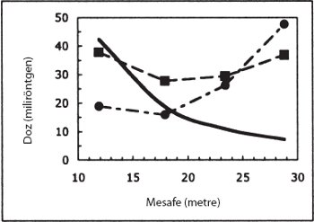

Çünkü yaşayanlar öleceğini biliyor, ama ölüler hiçbir şey bilmezler, onlar için artık ödül yoktur çünkü anıları bile unutulmuştur. Sevgileri, nefretleri ve hasetleri çoktan yok olmuştur; ve güneşin altında yapılan hiçbir şeyde artık onlar için ebediyen pay yoktur.
— Vaiz 9:5-6
ZİHİN VE RUH
Modern insan, neredeyse on binlerce yıl önce sahneye çıktığı andan itibaren, kadınlardan doğan, büyüyen ve yaşlanan, sonunda hareket etmeyi ve nefes alıp vermeyi kesen ve en sonunda da cansız kemiğe dönüşen fiziksel bir bedenden fazlası olduğuna dair bulanık bir kavrayış taşımış görünmektedir. Hemen her kültürün insanları, gelişimlerinin bir noktasında, kendileri gibi canlı varlıkların canlılık kazanması da dahil etraflarında dönen olaylarda etkin bir fail olarak eylemde bulunan birtakım görünmez ruhlar tasavvur etmiştir.
Bu düşünce tarzı insanlığın çocukluk dönemi için son derece makuldür. Bir anda konuşan ve dolaşan bir kişi bir diğer anda sonsuza dek sessiz ve hareketsiz kalıyor. Bu kişiyi canlı tutan her neyse birdenbire yok oluyor. Dahası, bu ölü kimse düşüncelerde ve düşlerde hâlâ yaşıyor görünüyor – ölümden sonra hayatta kalan gölge ruh.
Yaygın kadim inanışlardan biri, kalbin varlık ve zekânın merkezi olduğuydu. Bu fikir, "iyi kalpli" veya "yürekten gelen" eylemler gibi metaforik söyleyişlerle günümüze dek gelmiştir. Eski Mısır'da rahipler ölüyü ölüm sonrası yaşama hazırlarken beyni çıkarırlardı ama kalbi bedende bırakırlardı. Empedokles (ö. MÖ 490) gibi ilk Yunan filozofları düşünme ve hissetmeyi kalbin etrafında bulunan ama ölümden sonra bedeni terk eden ölümsüz bir ruha bağlarlardı.
Alkmaion'un, "Tüm duyular beyine bağlıdır," önermesine karşın eski çağlarda beyin önemli bir organ olarak görülmezdi. Alkmaion da diğer kadim Yunanlar gibi bedende kozmosu oluşturan dört öğeden biri olan havadan (diğerleri ateş, toprak ve su) meydana gelen ruhlar için kanallar bulunduğuna inanıyordu. Platon (yak. MÖ 345) "bitkisel ruhu" karın boşluğuna, "yaşamsal ruhu" kalbe, ölümsüz ruhu da kafaya yerleştirmiştir. En ünlü öğrencisi Aristoteles ise (ö. MÖ 322) ölümsüz ruhu alıp kalbe koydu. Yeri neresi olursa olsun ortak görüş ruhun can için bir araç, bedene yaşam ve düşünce veren bir güç olduğuydu.[84]
Ruhun havayla ilintilendirilişi birçok kadim dilde görülür: İbranice ruah ("rüzgâr" veya "soluk") ve nefesh kelimeleri nefesle ilgilidir; Yunanca psukho ("nefes almak") kelimesi, "ruh" anlamındaki psukheden gelir; Latincedeki anima ("hava", "soluk" veya "can") ve spiritus kelimeleri de solukla ilintilidir.[85] Ruhun ölümde bedenden son nefesle ayrıldığı kabul edilirdi.
Hawaii'de şamanlar ölü bedene yaşamı "Ha!" diye bağırarak geri üflemeye çalışırlardı. Batılı doktorların bunu yaptığı görülmüyordu ve bu yüzden onlalar "ha-ole", yani "ha'sız" deniyordu. Bugün Hawaii'de beyazlara halen haole denmektedir.
Eski Ahit'te ruh hayatın kendisidir ve bedene Tanrı tarafından üflenir. Geleneksel Judaizm ölümü insan varoluşunun sonu olarak görmediği halde onda bir "ölüm sonrası yaşam" dogması da yoktur– bu konuda Yahudi ilahiyatçılar arasında çeşitli görüşler mevcuttur. Oysa Hıristiyanlık'ta insanın ölümsüzlüğü temel ilkedir– belki de bu inanç sistemi uzun soluklu başarısını en çok bu öğretiye borçludur. İslamın gücü de, ölüm sonrasında kara gözlü hurilerin (erkeklere) ebedi haz sunacağı vaadine bağlanabilir.
Yunan hekim Galen'in (ö. 201) öğretilerini izleyen erken dönem kilise babalarına göre ölümsüz ruhun yeri kafa boşluğuydu. Ancak Hıristiyanlık 476'da Roma'nın çöküşünden sonra, on ikinci yüzyılda, çoğu İslami kaynaklardan edinilen kadim yazmaların keşfine kadar Yunan felsefesiyle bağını yitirdi.[86]
Hıristiyanlar ölümsüz ruh kavramına tümden meydan okuyan Yunan atomcularının öğretilerini pek iyi karşılamadılar. Epikuros'a göre (ö. MÖ 270) ruh diğer her şey gibi tamamen maddeden meydana geliyordu. Ruh atomları göğüste yoğunlaşır ve beden öldüğünde onların da yaşamları biterdi. Romalı şair Lucretius (ö. MÖ 55) ise De Rerum Natura ("Şeylerin Doğası Üzerine") adlı eserinde şunları yazıyordu: "Ruhun tözü yok olabilir göründüğünden ölüm hiçtir bizim için, hiç ilgilendirmez bizi. Birliktelikleri varlığımızın özü olan beden ve ruh ayrıldığında toprak denizlere denizler göklere karışsa bile, hiçbir şey erişemez bize, uyandıramaz hissiyatımızı."[87]
Bugün sıradan insanların çoğu ruh-beden veya ruh-madde "ikiliğini" ya da ayrılığını baştan doğru olarak kabul etmektedir. Ancak bu ayrım René Descartes'ın (ö. 1650) atomlarla ruhu bağdaştırmanın bir yolunu bulduğu on yedinci yüzyıla dek hiç de açık değildi. Bu dönem makinelerin ortak kullanıma girmeye başladığı çağdı. Descartes, Galileo Galilei'nin (ö. 1642) çağdaşıydı ve Isaac Newton'dan (ö. 1727) iki kuşak önceydi. Fransız düşünür, daha sonra Newton tarafından geliştirilecek yeni mekanik biliminde geniş bir uygulama alanı bulan eğrilerin denklemlerle ve Kartezyen koordinat sistemiyle temsil edilmesi gibi birçok matematiksel yöntem geliştirdi.
Descartes, insanlar dahil tüm hayvanların, elbette Tanrı tarafından tasarlanmış (Engizisyondan korkuyordu) karmaşık, maddi makineler olduğunu ileri sürdü. Ancak iddiasına insanların maddeden oluşmayan bir başka bileşene daha sahip olduğunu da ekledi: maddi olmayan ruh. Ruh makinelerin yapamadığının kabul edildiği her şeyi yapıyordu: düşünme, bilinç, irade, soyutlama, kuşku ve anlama.[88] Descartes'e göre beyindeki epifiz bezi, beyinle ruhun etkileşime girdiği yerdi.
Descartes'ın bir diğer çağdaşı da Thomas Hobbes'du (ö. 1679). Hobbes insan bedeninin makineye benzediğinde Descartes'la aynı düşüncede olmasına karşın, maddi olmayan ruh fikrinin bir sanrıdan ibaret olduğunu öne sürdü. Hobbes daha da ileri giderek bizzat toplumun bir saat mekanizmasına benzediğini iddia etti. Bu düşüncenin izini sürdüğü 1652'de yayınlanan en ünlü eseri Leviathan'da "optimal siyasal yapıyı" belirlemeye çalıştı. Ona göre bu bir kral veya başkasının diktatörlüğüydü.[89]
Tarihin bu önemli dönüm noktasında Avrupa'daki ampirik bilim, ilerlemenin yüzyıllardır önünü kesen "otoriteye körü körüne itaat" anlayışı konusunda kuşkular uyandırmaya başladı. Copernicus ve Galileo Aristoteles'in öğretilerine meydan okuyan yeni kozmolojilerini deneysel verilere dayandırarak Newtoncu devrimin sahnesini hazırladılar. Ama daha bu devrim gerçekleşmeden önce bile yeni nesil cesur deneyciler insan ve hayvan bedenlerine yakından bakmaktaydı.
BEYNİN YÜKSELİŞİ
Carl Zimmer, Soul Made Flesh: The Discovery of the Brain–and How It Changed the World adlı büyüleyici kitabında İngiliz İç Savaşı sırasında ve sonrasında Oxford'da çalışan ve insan ile hayvan kadavralarına teşrih uygulayarak pek çok anatomik olgunun yanı sıra temel düşünce organının beyin olduğunu da ortaya çıkaran müthiş bir grup on yedinci yüzyıl insanının öyküsünü anlatır.[90] Bu grupta başka alanlardaki bireysel başarılarıyla ünlenmiş kimseler de vardı: İnsan organlarının detaylı çizimlerini yaptığı sırada Oxford'daki görkemli Sheldonian Tiyatrosu'nu tasarlayan Christopher Wren (ö. 1723); yüzlerce anatomi deneyini yürütürken simyayı modern kimyaya dönüştüren ve hava basıncını kanıtlayan Robert Boyle (ö. 1691); araştırmacıların canlı organizmaların içindeki karmaşık yapıları görmesini sağlayan mikroskop gibi aletleri tasarladığı sırada yay yasalarını keşfeden Boyle'un asistanı Robert Hooke (ö. 1703).
Oxford grubunun önderi, beynin ilk ayrıntılı anatomisini çıkaran ve bütün bedende sinir sisteminin izini süren hekim Thomas Willis'ti (ö. 1675). Kalbin, beyinden aldığı sinyallerin denetiminde kan pompalayan bir organ olduğunu belirlemişti. Çağdaşları gibi Willis de bu sinyallere "ruhlar" diyordu. Sinirlerce taşınan sinyallerin elektrikle tanımlanması on sekizinci yüzyıla kadar gerçekleşmeyecekti.
II. Charles'ın yeniden tahta çıktığı restorasyon devrinde "Oxford Çevresi" kamuya açılarak Londra'ya taşındı ve izleyen bilimsel devrimde katalizör rolü oynayacak Doğal Bilginin İlerletilmesi İçin Kraliyet Topluluğu'na dönüştü.
Willis, daha sonra görüşlerinin çoğunu, en azından genel hatlarıyla onayacak nöroloji bilimini kurdu. Bugün "ruhların" beyinden gelen sinyalleri sinir sistemi aracılığıyla taşıyan elektriksel impulslardan oluştuğunu biliyoruz. Beynin farkı kısımları farklı işlevler görür. İnsan beyni temelde diğer hayvanların beyinlerinden farklı değildir; onlardan üstün bilişsel ve entelektüel yetilerimizi sağlayan kısımlarıyla ayrılır. Beyinde doğan psikolojik rahatsızlar bugün rutin olarak kimyasallarla tedavi edilmektedir. Ve bildiğimiz gibi, kimyasallar zihinsel bozukluklara yol açabilir, zihinsel hallerde değişimler yaratabilir ve hatta "ruhsal deneyimleri" (LSD'nin yaptığı gibi) tetikleyebilir. Alzheimer gibi beyin rahatsızlıkları hafızayı ve davranışları etkiler. Bütün bunlar düşüncelerimizin, anılarımızın ve öznel deneyimlerimizin tümüyle beynimizdeki fiziksel süreçlere dayanabileceğine dair son derece sağlam işaretler sunmaktadır.
GÜNÜMÜZDE BEYİN BİLİMİ
Bilim insanları incelemek için artık ölü bedenden beyin çıkarmaya gerek duymuyor. Görüntüleme teknolojisi beyinleri sadece ayrıntılarıyla değil, canlı ve işlevselken de incelemeyi mümkün kılıyor. Geçtiğimiz yıllarda bu sayede beyindeki algısal yargılama ve diğer düşünme kaynaklarının yerleri saptanabildi. Günümüzde deneklerin kendilerinden istenilen mekanik, entelektüel ve ahlaki seçimleri yaparken araştırmacıların onların beyinlerini izlediği deneyler yapılmaktadır.
Modern teknolojiyle birlikte birçok görüntüleme tekniği geliştirilmiştir. Bunların herhalde en güçlüsü manyetik rezonans –manyetik tınlaşım-görüntü tekniğidir (MRI). Nükleer Manyetik Tınlaşım (NMR) fiziğine dayanan, "nükleer" sözcüğü hastaları ürkütmemek için kaldırılmış olan MRI atom çekirdeğinin içindeki "spin (dönüş) hareketiyle"salınan enerjiyi tespit ederek görüntü oluşturur. Elektromanyetik spektrumun radyo bölgesinden gelen bu enerji aslında çok düşüktür – özellikle de atom bağlarını koparabilecek güçteki enerjiye sahip x-ışınlarıyla karşılaştırıldığında. Fonksiyonel MRI'da (fMRI) kan akışı örüntülerini görmek için kanın manyetik özelliklerinden yararlanılır. Beyine uygulanan fMRI taraması birbirlerinden bir milimetreden daha az mesafeyle ayrılan yapıların görüntülerini çabucak üretebilir ve beyindeki etkinleşmiş bölgeleri saptar.
Diğer beyin görüntüleme teknikleri arasında pozitron emisyon (sürüm) tomografisi (PRT), bilgisayarlı tek foton sürüm tomografisi (SPECT) ve elektroansefalografi (EEG) vardır.[91]
Tüm bu teknikler beynin belli bölgelerindeki fiziksel eylemlerin düşünme süreçlerine eşlik ettiğini onaylarlar. Şimdi konumuzla ilgili birkaç örneğe bakacağız. Çok daha fazlası ilgili yayınlarda bulunabilir.
ABD ve Brezilya'da bilim insanları, fMRI kullanarak, ahlaki yargılarda bulunulurken etkinleştirilen beyin bölgesinin eşit duygusal yüke sahip toplumsal yargılarda bulunulurken etkinleştirilen bölgeden farklı olduğunu keşfettiler.[92] Princeton'da araştırmacılar, çeşitli ahlaki ikilemler karşısında karar almaları istenen deneklerin beyin etkinliklerini gözlemlediler. Bu ikilemler iki kategoriye ayrılmıştı – doğrudan kişisel eylem gerektirenler ve gerektirmeyenler. Beyin taramaları tutarlı olarak kişisel eylemlerde beynin duygularla ilintili bölgelerinde daha büyük bir etkinleşme olduğunu gösterdi.[93] Burada konumuzla ilgili nokta yalnızca düşünmede beyindeki fiziksel süreçlerin rol alması değil, bu süreçlerin maddeden ziyade ruhun alanına ait olduğu kabul edilen en derin düşüncelerden de sorumlu olduğunun görünmesidir.
Canlı beyinlerle yürütülen bir diğer araştırma alanında ise elektriksel veya manyetik atımlarla lokal beyin bölgelerinin uyarılması söz konusudur. Sinirbilimci Michael Persinger, insanların "dinsel" veya "ruhani" saydıkları birçok deneyim tipinin beynin manyetik uyarımıyla ortaya çıktığını iddia eder.[94] Ancak Persinger'in ulaştığı sonuçlar tartışmalıdır.[95]
Diğer yandan Dr. Olaf Banke ve meslektaşları, beynin belli bölgelerinin elektrikle uyarılmasıyla kişinin bilincinin bedenden ayrılıyor gibi göründüğü BDD (ya da OBE) olarak bilinen beden dışı deneyimleri meydana getirebildiklerini bildirdiler.[96] BDD deneyimlerini iki kitabımda tartıştım ve bunların beynin fiziksel süreçleri dışında herhangi bir şeyin işin içinde olduğuna dair hiçbir delil sunmadıkları sonucuna vardım.[97]
Bu sonuçlar bilinçli düşüncelerin gayri cismani bir ruh tarafından yönetildiği olasılığını (ki öyleyse ruh, bu düşünce faaliyetini bir şekilde beyin ve sinir sistemi vasıtasıyla gerçekleştirir) tümüyle inkar etmez. Bu da, şu veya bu biçimde, çoğu dinin esas öğretilerinden biri olarak kalmıştır. Papa John Paul II, 1986 yılında, Papa Pius XII'nin 1950 yılındaki, Kilise'nin biyolojik evrimin öğrenilmesini ve öğretilmesini yasaklamadığını söyleyen bildirisini yeniden onaylamıştır.[98] Ancak Papa, teorinin zihne değil, bedene uygulanabileceğinin altını özenle çizmiştir: "Kendilerine ilham veren felsefelerle uyum içinde ruhun canlı maddenin kuvvetlerinden zuhur ettiğini ya da bu maddenin salt bir epifenomeni olduğunu düşünen evrim teorileri insan hakkındaki hakikatle bağdaşmadığı gibi insanın asaletini de temellendiremezler."[99]
Kutsal Papa Hazretleri'nin uyarısına rağmen bugün ciddi miktarda deneysel veri güçlü bir şekilde zihnin gerçekten de"bu maddenin salt bir epifenomeni" olduğuna işaret etmektedir. Madde geleneğin ruhla ilintilendirdiği tüm eylemleri tek başına yapabilir gibi görünmektedir. Verilere göre hiçbir "ruhsal" öğeye gerek yoktur. "Bizlerin" sadece atomlardan meydana gelen bedenler ve zihinler olduğumuz iması, belki de basitçe kısa sürede ortak bir bilgi olarak kabul edilmeyecek denli yeni, rahatsız edici, ortak önalgılarla bağdaşmaz bir sonuçtur. Bununla birlikte, eğer gerçekten ölümsüz veya cansız maddede bulunması mümkün olmayan özel özelliklere sahip bir ruhumuz varsa, bu ruha dair birtakım deliller bulmayı beklememiz gerekir.
Geçtiğimiz yüz elli yıl içinde insan zihninin özel güçlerine ilşkin "kontrollü koşullar altında" yürütüldüğü iddia edilen bilimsel gözlemlere dair yüzlerce rapor yayınlanmıştır. Bu raporların tek bir tanesi bile, bilimin sıradışı bir iddiayı ciddiye alması için gerekli -birinci bölümde sıraladığımız– beş koşulun tümünü karşılayamamaktadır. Bu koşullar makul değil midir? Araştırmacılardan çok şey mi istiyorum? Aynı dönem içinde yapılmış, aynı koşulları tam olarak karşılayan bir düzineden fazla sıradışı bilimsel buluş sayabilirim. Bu nedenle bu tutumu bilimin "yeni fikirlere" karşı çıkan dogmatik eğilimine bağlamak hiç de doğru değildir.
Elbette her iddiayı incelememe imkan yok. 1990 tarihli Physics and Psychics adlı kitabımda, bizzat savunucularının en ikna edici bulduğu iddiaları seçerek eleştirel analiz yoluyla inceledim.[100] Bunları, 2003 tarihli Bilim Tanrı'yı Buldu mu? adlı kitabımda güncelledim.[101] Aşağıda, zihnin özel güçlerine dair sağlam deliller bulunmadığını göstermek için yeterli olan örnek iddialara değineceğim.
YAŞAM GÜCÜ
Öncelikle ruhun canlı organizmalarda bulunan bir tür özel bileşen, bir élan vital veya yaşam gücü olarak yaşamın kendisiyle kadim bağlantısını ele alalım; uzun zamanlar boyunca bu yaşam gücünün canlı organizmaları taşlardan ve ölü organizmalardan ayırdığı düşünülmüştür. Bu inanca birçok eski kültürde rastlanır; bedenlerimizde aktığı kabul edilen özel enerjiyi belirtmek için kullanılan qi (chi) gibi terimleri günümüzde bile duyuyoruz. Bu yaşam gücü Batı dinlerinde sıklıkla ruhla özdeştirilir. Eğer böyle bir yaşam gücü varsa, onun mevcudiyetini tespit edebilmemiz gerekir.
Tamamlayıcı ve alternatif tıbbın (yani bilimsel olmayan tedavilerin) büyük kısmı, kimi zaman "biyo-enerjetik alan" denilen bir yaşam gücünün var olduğu varsayımına dayanır, ama biyoloji bilimi bu gücün insanlarda, hayvanlarda ve bitkilerde olduğunu saptayamamıştır.[102] İster canlı ister cansız tüm maddelerde meydana gelen aynı iyi bilinen fiziksel ve kimyasal süreçler, canlı organizmanın çeşitli parçaları arasında gözlenen etkileşimleri açıklamak için yeterlidir. Canlı hücrelerin fiziği ve kimyası temelde taşlarınkiyle aynıdır, yalnızca biraz daha karmaşıktır.
Fizik laboratuvarlarında kullanılan hassas algılama cihazları çok düşük yoğunluklu çeşitli radyasyon türlerini tespit edebilmektedir. Canlı organizmalar, kalp ve beyindeki titreşimli yüklerin yaydığı ve doğrudan deri üstüne yerleştirilen sensörlerle tespit edilebilen zayıf elektromanyetik radyasyon ile ölü veya canlı (veya taş gibi, hiç canlı olmayan) tüm fiziksel cisimlerin saldığı kızılötesi termal radyasyon dışında elimizdeki en güçlü bilimsel cihazlarca tespit edilemeyen benzersiz hiçbir radyasyon yaymazlar.
Elbette, basitçe aletlerin "yaşam enerjilerine" duyarsız olduğu savunulabilir, ama biyo-enerjetik alan savunucuları genellikle kolayca tespit edilen manyetik dalgalarla bağlantı kurduklarını iddia ederler.[103] Bu anlamlıysa, buna ilişkin ölçülebilir bir etki görülmelidir. Örneğin bir şifacının hastanın enerji alanını "manipüle" etmesine dayanan Şifalı Dokunuş adı verilen yaygın bir tedavi vardır. On yılı aşkın yaygın kullanımdan sonra böyle bir tedavinin işe yaradığına dair bir delil bulunmasını beklemek makuldür. Oysa tümüyle kişisel anlatılara dayanan, bu yüzden de uygun bilimsel sınamaya alınamayanlar dışında hiçbir delil yoktur. Gerçekten de, "şifalı dokunuş" sınanmıştır ve sınamayı geçememiştir.[104]
QI = MC2?
Kısa süre önce, Çin'de qi adı verilen yaşam gücünün bir bilimsel deneyle kanıtlandığına dair yayınlanmış bir iddiayı inceledim. 2005 yılı Nisan'ında bir bilimsel delegasyonun üyesi olarak gerçekleştirdiğim Çin yolculuğumda bu konuya dair analizimi Çin'deki birkaç üniversitede sunma fırsatı buldum.
Söz konusu deneyler, 1987 yılında Beijing'de qi ustası ve şifacı Dr. Xin Yan'ın kamuya açık "konferanslarında" yapılmış ve hakemli bir Amerikan dergisinde çıkmıştı.[105] Standart radyasyon dozimetrelerinde, qi oldukları iddia edilen, arkaplan seviyelerinin üstünde olan pozitif sinyaller rapor edilmiştir. Hem arkaplan seviyeleri hem sinyaller oldukça yüksekti. Başka fenomenler de bildirilmişti ama ben onları dikkate almadım çünkü makalede onlarla ilgili yeterince bilgi sunulmamıştı.
2002'ye dek yayınlanmayan Yan makalesinde aradaki yıllarda bu olayın başarılı (veya başarısız) tekrarlanma girişimlerinden hiç söz edilmez. Sunulan verilerden sonucu değerlendirmek zordur. Dahası, hata tahminleri verilmemiştir – bu da en saygın bilimsel dergilerde yayınlanmasının reddedilmesi için yeterli bir nedendir.
Bununla birlikte, sunulan veriler tek bir deneyde bazı sonuçlar çıkarmak için yeterlidir. Bu deneyde Dr. Yan, on bir saatlik (!) bir "konferans" boyunca "qi salmıştır." Konferans salonuna, normalde nükleer laboratuvarlarda maruz kalınan radyasyonu ölçmekte kullanılan termoluminesans dozimetreleri (TLD) yerleştirilmiştir. Arkapla-nın dikkate değer ölçüde üstündeki dozlar, bu sözde qi-ışınlarının odaksızlığına işaret edecek şekilde farklı yönlerden kaydedilmiştir. Diğer bazı deneylerde denetleme olmakla birlikte, bu deneyde qi ustasının olmadığı aynı şartlar altında hiçbir ölçüm alınmamıştır.
Şekil 3.1'de iki tip TLD tarafından ölçüldüğü bildirilen dozajları podyumdan uzaklığın bir fonksiyonu olarak çizdim. Bu tiplerden biri, [7LiF(Mg, Ti)] gamma ışınlarına duyarlıyken diğer tip, [6LiF(Mg, Ti)] gamma ışınlarının yanı sıra termal nötronlara da duyarlıdır. Salonun, yoğunlukların karşılaştırılabilir olduğu iki yanının ortalamasını aldım. Şekildeki kareler ve daireler on bir saatlik deneyde maruz kalınan radyasyonu miliröntgen (mR) cinsinden gösteriyor. Gamma ışınları için bir miliröntgen yaklaşık bir milireme (mrem) eşittir. Milirem biyolojik açıdan önemli maruz kalmayı ölçmede kullanılan birimdir. Eğer sayılar doğruysa, ortada, bir yıl boyunca sürekli maruz kalınması halinde genel olarak kabul edilen güvenli dozajı beş bin mrem aşacak bir yoğunluğu temsil etmektedir. Yani kaydedilen radyasyon yoğunluğu dikkate değerdir.
Şekil 3.1

Şekil 3. 1. Xin Yan deneyinin sonuçları. Kare noktalar nötronlara ve γ-ışınlarına duyarlı dozimetrelerin verileridir. Yuvarlaklarsa sadece γ-ışınlarına duyarlı olanlara aittir. Noktasız eğri ölçülen radyasyon herhangi bir enerji biçiminden bekleneceği gibi korunsaydı neyin beklenebileceğini gösteriyor.
Deneyde kullanılan dozimetreler aynı zamanda, yaklaşık on mR tespit sınırlı uzun vadeli radyasyon toplamına maruz kalmayı ölçecek şekilde tasarlanmıştır. Bunlar kısa vadeli maruz kalmalar için özellikle uygun değillerdir ve anlık radyasyon yoğunluklarını ölçmeye uygun cihazlar vardır. Bahsettiğimiz gibi, makalede tahminler veya hatalar verilmemiştir (reddedilmesi için yeter neden). Veri noktalarına on mR'lik hata çubukları koyarsak sonuçlar önemsiz çıkacaktır.
Çalışmanın yazarları, izleyicilerden sağlığa yararlı etkilere dair bildirimler aldıklarını iddia ediyorlar, ama bu konuda hiçbir veri sunmuyorlar. Gamma ışınlarının tümörlere yönlendirilmeleri dışında sağlık üzerinde olumlu yararlara sahip olduğu kaydedilmemiştir. Yazarlar da raporlarında şunları söylüyor: "Doktor Yan'ın ürettiği qi alanının gerçek gamma ışınları ve nötronlar içermesi pek olası değildir. TLD okumaları daha çok bir TLD algılayıcısıyla Dr. Yan'ın qi alanı arasındaki etkileşimin fenomenolojik betimlemesi gibi görünmektedir." Yazarlar söz konusu fenomen için herhangi bir teorik model sunmadıkları gibi qi-ışınlarının ilgili algılayıcıları nasıl etkilemiş olabileceğine dair hiçbir öneride bulunmuyorlar.
Dozaj seviyesinden bağımsız olarak, şekil 3.1'de "gamma ışınları" verilerinin uzaklıkla birlikte artarken "nötron artı gamma ışınları" verilerinde uzaklığın anlamlı bir etki göstermediğini görüyoruz. Aynı grafikteki pürüzsüz eğri ise (keyfi ölçekle) enerjinin korunumunun gerektirdiği uzaklığın karesiyle orantılı (gözlenmeyen) azalmayı gösteriyor.
Bana, "Enerjiyi belirleyen tanımlayıcı özellik nedir?" diye sorsanız, korunduğuna işaret ederim. Enerji korunmasaydı, niceliğin fizikte fazla kullanımı olmazdı. Korunması gereken koşullar altında korunmayan bir nicelik ölçülüyorsa bu, gözlemlenenin bir enerji biçimi olmadığına dair sağlam bir delildir. Qi enerji gibi görünmemektedir, hatta yok görünmektedir.
ESP
Zihinlerin, oldukça yaygın bir biçimde (özellikle de bilimkurgularda) gerçek olduğu kabul edilen bir özel yeteneği de duyu ötesi algıdır (ESP). Bu görüşte olanlara göre zihinler şu andaki yerleşik bilimde yeri olmayan bir mekanizmayla birbiriyle iletişim kurarlar. Zihne atfedilen bir diğer yetenekse psikokinezi'dir(PK). Buna göre, düşünceler -geçmişte, şimdide, ve gelecekte– nesneleri hareket ettirebilir veya fiziksel fenomeni başka şekilde etkileyebilir. Eğer bedensiz bir ruh beyin moleküllerini hareket ettirmek için bir tür psikokinezi kullanıyorsa, beynin dışındaki molekülleri de hareket ettirebilmelidir.
Bu fenomenler gerçekten varsa, kontrollü, bilimsel deneylerde tetkik edilebilmelidirler. On dokuzuncu yüzyılın ortalarından itibaren aralarında Michael Faraday, William Crookes ve Oliver Lodge gibi önde gelen fizikçilerin de bulunduğu pek çok biliminsanı sıradışı zihinsel fenomenlerin gerçekliğini bilimsel olarak doğrulamaya çalışmıştır. Zamanının en büyük deneycisi Faraday hiçbir delil bulamazken, Crookes ve Lodge kendilerini psişik güç adını koydukları şeyi keşfettiklerine inandırmışlardır.
Ancak Crookes ve Lodge deneylerini ikna edici kılacak yeterlilikte kontrol etmemişlerdi.[106] Profesyonel sihirbaz ve şarlatanların yüzyıllarca geliştirdiği çeşitli illüzyon numaralarında son derece maharetli olan psişik "medyumlarla" çalışmışlardı.
Crooke, Lodge ve diğer erken dönem psişik araştırmacıları deneklerinin deneylerinin protokollerini kontrol etmesine izin vermek gibi temel bir hata yapmışlardır. Sağduyuya dayanan metodolojinin bu ciddi ihlaline rutin olarak psişik deneylerde bugün bile rastlıyoruz. Örneğin, Princeton Engineering Anomalies Research Laboratory'de (PEAR)[107] yürütülen ve çığırtkanlığı bolca yapılan deneyleri düşünün. Bilim insanları hile ve numaraları yakalamakta, sihir sanatlarında yetkinliği olmayanlardan daha başarılı değildir – hatta, evrenin kendilerine yalan söylemesine pek alışkın olmadıkları göz önüne alınırsa daha başarısız oldukları bile söylenebilir. Crookes ve Lodge, belki de yaşadıkları kişisel trajedilerden dolayı aldatılmaya daha açıktılar.[108]
Psişik deneylerde kontrolün daha iyi yapılması gereği 1930'larda Duke Üniversitesi'nden botanikçi Joseph Bank Rhine tarafından kabul edildi. ESP teriminin yaratıcısı Rhine, psişik güçlerin varlığına ilişkin deneysel deliller bulmak için sahtekârlığa kaçmayan bir çaba gösterdi. Eleştirel inceleme karşısında tutunamayan bir dizi iddiada bulundu ve itibarlı bilimsel yayınlardan defalarca ret cevabı aldıktan sonra, yaptıklarına daha anlayışla bakacak eleştirmenleri seçebileceği kendi dergisini çıkarmaya başladı. Anaakım bilim insanlarını psişik güçlerin varlığına ikna edememesine karşın Rhine sonunda, bugün halen parapsikoloji adıyla bilinen yeni bir araştırma alanının öncülüğünü yaptı.[109] Bugün parapsikolojiyle uğraşanlar bile konvansiyonel bilimin sınırlarında dolandıklarını kabul etmek durumundadırlar.
Daha önce vurguladığım gibi, üzerinde fikir birliğine varılmış kesin bir bilim tanımı yoktur. Bu yüzden parapsikolojinin bilim olup olmadığı noktasını öne çıkarmayacağım. Parapsikologlar hâlâ ESP'nin kontrollü deneylerde gözlemlendiğini iddia ediyorlar. Bu raporların bir kısmı hakem değerlendirmesinden geçmiştir, ama burada hakem denilen kişiler genellikle, Rhine'ınki gibi anaakım bilimsel dergilerden farklı standartlara sahip özel dergilere uygun değerlendirmeler yapan diğer "inananlardır". Bu dergilerin editörleri yeni fikirlere son derece "açık" olduklarını iddia ederler. Bunda sorun yok, ama yukarda bahsettiğimiz qi deneyi örneği gibi kötü yapılmış deneyleri yayınlamak hiçbir yararlı amaca hizmet etmediği gibi, bu dergilerde yayınlanan diğer çalışmaların güvenilirliğini de büyük ölçüde zedeler.
İkinci bölümde bahsettiğimiz yaratılışçılar gibi, ESP savunucuları da bulgularının konvansiyonel bilimin eski fikirlere dogmatik bağlılığı yüzünden hiç de adil olmayan bir biçimde reddedildiğini iddia ediyorlar. Bu görüşe tepkim akıllı tasarıma verdiğimden farklı değil: Psişik olaylara dair ikna edici deliller rapor edilmiş olsa bilim insanları niçin bunları reddetsinler ki? Tıpkı akıllı tasarım durumunda olduğu gibi, zihnin özel güçlerinin keşfi vergi mükelleflerinden kesinlikle cömert fonların akmasını sağlayacak müthiş yeni araştırma alanları açacaktır. Anaakım bilim insanları parapsikolojinin iddialarını, tam da akıllı tasarım iddialarını neden kabul etmiyorlarsa o nedenle kabul etmiyorlar: Veriler iddiaları desteklemiyor.
Kısacası on dokuzuncu yüzyıl ortalarındaki ilk deneylerden bugüne kadar ortaya atılan ESP delili iddiaları, bilim insanlarının her türlü sıradışı iddiada uyguladıkları aynı tetkikler karşısında ayakta kalamamaktadır.
DENEYLERİN ANLAMLILIğI
Deneylerin istatistiksel anlamlılığı bildirilmiş birçok sıradışı iddianın reddedilmesine temel oluşturur; bu yüzden burada deneylerin istatistiksel anlamlılığı konusunu biraz daha geniş olarak ele alacağım. Parapsikologlar tıp bilimiyle aynı istatistiksel anlamlılık standartına göre değerlendirilmeleri gerektiğini öne sürüyorlar. Tıp biliminde, söz gelimi, yeni bir ilacın iddia edilen olumlu etkileri, istatistiksel anlamlılığı ("P değeri") yüzde 5 (P= 0.05) veya daha düşük olduğunda yayınlanır. Yani, eğer deney birçok defa tamamen aynı şekilde tekrarlanırsa, –sonlu verilerle ilgili herhangi bir ölçümde meydana gelen normal istatistiksel dalgalanmaların bir artefaktı olarak– ortalama yirmide bir veya biraz daha yüksek oranda aynı etki ortaya çıkacaktır.
Bu ne anlama gelir? Tıp dergilerinde yer alan her yirmi iddiadan ortalama bir tanesi yanlıştır – istatistiksel bir artefakttır.
Bunu tüm kariyerimi geçirdiğim temel parçacık fiziği alanındaki standartla karşılaştıralım. Temel parçacık fiziğinde önemli bir yeni keşfin yayınlanması için P değeri standartı, yüzde birin yüzde biridir (P < 0.0001). Bu standart ortalamada sadece on bin rapordan birinin istatistiksel artefakt olduğunu gösterir.
Tıp alanındaki standardın düşüklüğünün gerekçesi şu olabilir: Tıp yayınları sıradışı yeni buluşların tartışıldığı bir yerden çok umut vaat eden yeni tedavi yöntemlerinin sağlık camiasına olabildiğince hızlı bir şekilde bildirildiği yerdir. Kimileri için yirmide bir yanlışlık olasılığı, işe yarayan bir tedavinin hayat kurtarabilme şansı karşısında ödenmeye değer bir bedel olarak görülebilir. Ancak bana göre, yakın dönemde yayınlanan çok sayıda yanlış veya sahte rapor düşünülünce, tıbbi alanda da standardın yükseltilmesi gerekiyor. Mevcut düzenleme içerisinde işe yaramayan tedaviler uğruna harcanan çaba, para ve hayatları bir düşünün.
Aslında tıbbi araştırmacılar da yayın standartlarındaki yetersizliği kabul etmeye başladılar. Hatta epidemiyolog John Ionnidas, "Medicine'de yayınlanmış araştırma bulgularının çoğu yanlıştır,"[110] diyecek kadar ileri gitmiştir. British Medical Journal'da yakın dönemde yayınlanan bir makaledeyse P değeri eşiğinin P < 0.001'e çevrilmesi gereği öne sürülmüştür. Bu seviye fizikteki kadar sıkı olmasa da ek komplikasyonları düşünüldüğünde muhtemelen tıp için uygundur.[111]
Öte yandan parapsikologların hayat kurtarmayla işleri yoktur. Onlar daha çok önemli bir keşfe dair bir raporun birkaç ay veya yıl açıklanmamasının kimseyi öldürmeyeceği bir alanda çalışan, yani doğanın temel yapısı hakkındaki olguları açığa çıkarmaya çalışan parçacık fizikçileri veya astronomlara benzerler.
Psişik fenomenlere dair delil iddiaları, neredeyse istisnasız olarak, sonuçların daha "dünyevi" yollarla açıklanmasını devre dışı bırakmaya yetecek ölçüde az istatistiksel hataya sahip olma noktasına yaklaşamamıştır.[112] Makul istatistiksel anlamlılık gösteren bir avuç iddiaya gelince bunların tümünde de sonuçların ikna ediliciliğini zedeleyen yöntemsel kusurlar vardır. Ayrıca bunların hiçbiri istatistiksel anlamlılık düzeyinde bağımsız olarak tekrarlanamamıştır.
Tekil deneylerin istatistiksel anlamlılık eksikliğini aşabildiğini iddia eden birtakım çalışmalar vardır. Bunlarda birçok deneyin sonucunun birleştirildiği "meta-analiz" adlı bir teknik kullanılmıştır.[113] Söz konusu yordam son derece tartışmalıdır.[114] Bildiğim kadarıyla bilimin hiçbir alanında meta-analiz tekniği kullanılarak yapılmış sıradışı keşif yoktur. Birden fazla bağımsız deneyde bir fenomene dair anlamlı bir delil bulunamıyorsa, birleştirilmiş verilerin tümüyle matematiksel manipülasyonunun aniden büyük bir keşfe yol açacağını elbette bekleyemeyiz.
Parapsikologların vardığım sonuçları tartışacaklarından kuşkum yok. Ama bir olguyu inkar edemezler: Bir fenomeni doğrulamaya yönelik yüz elli yıllık çalışmadan sonra onlar hâlâ söz konusu fenomenin varlığına dair bilimsel camianın büyük bölümünün dikkatini çekecek herhangi bir delil sunmayı başaramamışlardır. Bütün bu çabalardan sonra güvenle şu sonucu çıkarabiliriz: Bu fenomen çok büyük olasılıkla yoktur. Başka bir alanda olsaydı, böylesine sürekli olumsuz sonuçlar tarihi iddiaların çoktan ıskartaya çıkarılmasına yol açardı. En azından şunu rahatlıkla söyleyebiliriz: Psişik deneyler insanların, cansız maddenin fiziksel sınırlarını aşan herhangi bir özel zihin gücüne sahip olduklarını göstermekte kullanılamazlar.
DUA İŞE YARIYOR MU?
Museviliğin, Hıristiyanlığın ve İslamın Tanrısının tanımlayıcı karakteristik özelliklerinden birinin şu olduğuna inanılır: O inananların yakarışlarına karşılık verir, niyaz edenin takvası ve bağlılığına göre duasını kabul ederek (veya ne zaman isterse o zaman) olayların doğal akışına müdahele eder. Her gün edilen milyonlarca duayla birlikte kayıtlı tarihte milyarlara ulaşan dua düşünüldüğünde şimdiye kadar (sadece anektot düzeyinde kalmayan) nesnel anlamda doğrulanabilir pozitif deliller elde edilmiş olmalıydı!
Elbette bir hastanın duasının veya bir hastanın yanında edilen duanın hastayı sakinleştirmek veya tansiyonunu düşürmek türünden tümüyle doğal, faydalı etkileri olabilir. Ancak bu etki en iyi olasılıkla çok küçüktür ve hiçbir dinsel veya ruhani öğe içermeyen rahatlama biçimlerinden ayırt edilemez.[115] Aslında, göreceğimiz gibi, bazı veriler böylesi duaların hastanın kaygısını artırabileceğini, dolayısıyla da zararlı olabileceğini göstermektedir. Her durumda, duanın iyileştirici etkisinin lehine sıradışı delillere itibar edilmesi için "körlemesine deney" yapılması, yani ne hastanın ne araştırmacıların kimin için dua edildiğini bilmemesi gerekir.
Dua bilimsel sınamaya uygun değilmiş gibi görünebilir. Bir defa onun maddi olmaktan ziyade "ruhsal" bir fenomen olduğu kabul edilir. İkincisi, duanın kontrol edilmesi zordur. Birisinin dua etmesini nasıl durdurabilirsiniz? Ya da deneğe dünyanın başka bir yerinde dua edilmediğinden nasıl emin olabilirsiniz? Ancak gözlenebilir sonuçlara sahip her şey bilimsel yollarla sınanabilir. Duaların da yaygın olarak gözlemlenebilir sonuçlar verdiğine inanılır. Örneğin bir dua diğerinden üstünse, buna ilişkin pozitif bir işaret vardır. Bu durum, bu tip dua için sistematik ve istatistik olarak anlamlı bir başarı oranıyla görülecektir. Birinci bölümde diğer dinlerin duaları başarısız olurken Katolik dualarının işe yaradığının özenli bilimsel deneylerle ikna edici şekilde kanıtlandığına dair hipotetik bir örnek sunmuştum. Bu olay için makul bir doğal mekanizma düşünmek çok zordu.
Daha önce belirttiğim gibi, kimi ulusal bilim örgütlerinin bildirilerine karşın, bilim gözlemlenebilir fenomenler konusunda kendisini tamamen maddi nedenlerle sınırlamaz. Deneysel veriler halihazırdaki konvansiyonel maddi yollarla açıklanamayan sonuçlar veriyorsa, hem dürüstlük hem has bilimsel tutum bu olgunun kabul edilmesini ve halka açıklanmasını gerektirir. Bu fenomeni açıklayabilecek herhangi bir maddi mekanizmanın bulunup bulunmadığı konusu daha ileri araştırmalar için açık bırakılır. Bu araştırmalara ödenek ayrılacağı ve bunun bilim insanlarını mutlu edeceği kesindir.
Duanın etkileri, özellikle duanın hastayı iyileştirmek gibi belirli bir konuya odaklandığı durumlarda ölçülebilir. Psişik fenomenlerde gördüğümüz gibi, bilimin duanın pozitif iyileştirme değerine sahip olduğunu gösterdiğini iddia eden birçok popüler kitap ve makale yayınlanmıştır.[116] Ama bu konuda da raporların hiçbirinin ikna edici olmadığını görüyoruz. Birçok özgül örneği Bilim Tanrı'yı Buldu mu? adlı kitabımda inceleyip tartıştığımdan bunları burada tekrarlamaya gerek görmüyorum.[117] Bugüne dek yayınlanmış bildiğim tüm pozitif etki iddiaları, birinci bölümde listelediğim koşullardan bir veya birkaçını yerine getirememektedir. Daha önce vurguladığım gibi, bu koşullar fizik ve diğer tüm "katı" bilimlerde ortaya atılan tüm sıradışı iddialara uygulanır. Dua çalışmalarına bu kadar çok katılan varken, gerçekten nitelikli bir çalışmanın gözden kaçması pek mümkün değildir.
Önceki kitabımın baskıya girişinden bu yana fiilen konuyu kapatmış görünen birtakım önemli sonuçlar yayınlandı. Bunların arasında özellikle önemli ölçüde dikkat çeken bir vaka, uzun dönemden bu yana yerleşmiş derin dinsel inançların değerlendirilmesinde rasyonel bilim kullanmaya kalkışıldığında ortaya çıkan bilinen zorluklara dair değerli bir kavrayış sunmaktadır. Ancak bu vakadan alacağımız ders şudur: Bilim insanları ancak işlerini gereğince yaptığında, yani kişisel inançlarının verilerin nesnel analizini bastırmasına izin vermediklerinde onların ulaştıkları sonuçlara güvenebiliriz.
COLUMBIA "MUCİZE" ARAŞTIRMASI
Journal of Reproductive Medicine, 2001 yılında, yüksek saygınlığa sahip Columbia Üniversitesi Tıp Merkezi tarafından sunulan bir makale yayınladı. Makalede Hıristiyan dua gruplarınca dua edilen kısır kadınların dua edilmeyenlere göre iki kat fazla doğurganlık kazandıkları iddia ediliyordu.[118] Bu durum hemen medyanın ilgisini çekti. ABC kanalının Günaydın Amerika programında, kanalın tıp editörü Timothy Johnson, milyonlarca izleyiciye bu "şaşırtıcı sonuçları" büyük bir hevesle anlattı.[119] Johnson'ın o sırada bir yandan da Massachusetts Peabody' deki evanjelist Community Covenant Kilisesi'nde papazlık yaptığını belirtmek herhalde konuyla ilgisiz bir saptama olmayacaktır.
Bu çalışma aslında Columbia Üniversitesi'nde değil, makalenin eş yazarlarından Kwang Cha'nın yönettiği Kore'deki bir enstitüde yapılmıştı. 219 kadınlık bir örneklem grubu kendileri için dua edilen ve dua edilmeyen olmak üzere rastgele iki gruba ayrılmıştı. Dua seansları ABD, Kanada ve Avustralya'daki Hıristiyan dua grupları tarafından yürütülürken, araştırmacılar veriler tamamen toplanıp klinik sonuçlar çıkana kadar gizli kalmıştı.
Rapor edilen sonuçlara göre, dua edilen grupta döllenme oranı yüzde elliyken dua edilmeyen grupta sadece yüzde yirmi altıydı. Aradaki farkın istatistiksel anlamlılığı P = 0.0013'tü. Ayrıca tüp bebek uygulamalarındaki embriyo transferinde de dua edilen grup yüzde 16,3'e karşılık yüzde 8 gibi oldukça yüksek bir başarı oranına sahipti (P = 0.0005).
İlk sonuç, yukarıda önerilen yeni P < 0.001 standardını tam karşılayamasa da, bu istatistiksel anlamlılık genelde rastladığımız değersiz P = 0.05'ten kesinlikle daha iyidir. Eğer rapor doğruysa, en azından tekrarlama girişimlerinin haklı bir temeli olacaktır.
Ancak sonuçların geçerliliği üzerinde kuşkular vardır. California Üniversitesi'nden doğumbilimci ve jinekolog klinik profesörü Bruce L. Flamm'a göre çalışma protokolünde birçok kusur vardır ve çalışma "anlaşılmaz ve kafa karıştırıcıdır."[120] Örneğin dua edenlerden bir grup doğrudan hastalar için dua ederken, ikinci bir grup sadece hastalar için dua etmekle kalmamış, birinci grubun dualarının kabulü için de dua etmişti. Üçüncü bir grupsa sadece, "Tanrı'nın iradesi veya arzusu neyse o yerine gelsin" diye dua etmişti.
Bu karışıklıklar belki o kadar ciddi değildir ve her halükârda bir "takip çalışmasıyla" kolayca düzeltilebilir. Ancak çalışmaya katılanlarla ilgili anlaşılması zor ve kafa karıştırıcı başka durumlar da söz konusudur.
Çalışmanın yazarlarından birisi olan Daniel P. Wirth, hiçbir tıbbi ehliyeti bulunmayan bir avukattır. Ancak Wirth parapsikoloji alanında diploma sahibidir ve parapsikoloji dergilerinde inancın iyileştirici etkisinin belgelenmiş delilleri bulunduğunu iddia eden çeşitli makaleler yayınlanmıştır.[121] Bu arada konuyla ilgisiz sayılabilecek bir meseleyi de ekleyelim: Wirth halen, aralarında ölü kimselerin adlarını maddi kazanç elde etmek amacıyla kullanma da dahil olmak üzere bir dizi sahtekârlık suçundan dolayı hapistedir.
Makalenin başyazarı olarak başlangıçta, Columbia Üniversitesi doğum ve jinekoloji bölümünün o dönemdeki başkanı Rogerio Lobo'nun adı bildirilmişti. Ancak araştırmanın yayınlanmasından kısa bir süre sonra Columbia Üniversitesi'nden bir açıklama yapıldı. Buna göre Profesör Lobo, tamamlanışından altı ila on iki ay sonra Cha tarafından bilgilendirilene kadar çalışmadan haberdar bile değildi. Lobo bundan sonra adını araştırmadan çekti ve Columbia ile Cha arasındaki ilişkiye son verildi. Bununla birlikte makale üniversite tarafından resmen geri çekilmedi –böylesi büyük bir üniversite için kara bir leke.
Ne Columbia Üniversitesi ne de Journal of Reproductive Medicine bu fiyaskonun lekesinden tamamen arınabilmiştir. İlgili iddiaların tartışmalı doğası bazı medya organlarında yer almış olsa da bunlar ilk açıklamada yapılan şaşırtıcı iddialar kadar geniş çaplı bir etki yaratmamıştır. "Columbia Mucize Araştırması" adıyla anılan bu şeye, Larry Dossey gibi utanmaz ruhsal şifa teşvikçileri, duanın iyileştirici etkisine bilimsel destek sağlayan "kontrollü klinik çalışma ve hakemli yayın" örneği olarak atıfta bulunmaktadır.[122] Gerçekten de bu deney ibretlik bir örnektir. Ama neyin örneği? Sıradışı iddialarla ilgili bilimsel araştırmaların nasıl yapılmaması gerektiğinin birinci sınıf bir örneği!
DUA GEÇMİŞİ DEğİŞTİREBİLİR Mİ?
Dossey, British Medical Journal'da 2001 yılında yayınlanan bir çalışma raporundan da çok etkilenmiştir. Bu çalışmaya göre, hastalar için edilen dualar hastaların hastanede kalma (P = 0.01) ve enfeksiyon sürelerini (P = 0.04) azaltmaktadır.[123] Bunu yeterince olağanüstü bulmadıysanız hemen ekleyelim: Dualar aslında hastaların hastaneden ayrılmasından sonra edilmişti. Bu duanın gücünün hem geleceğe hem geçmişe uzandığını ima etmektedir. Bu arada derginin, aynı yıl önermiş olduğu P < 0.001 standardını uygulamadığını da kaydedelim.
Bu raporun yazarı Dr. Leonard Leibovici'nin okurların sonuçlarını ne derece ciddiye almalarını beklediği açık değildir. Daha önce "Deneyciler alternatif tıbbın işaretlerinin yanlış olduğunu tanıyabilecek donanıma sahip değildir," demiş, alternatif (tamamlayıcı) tıptan "saz bülbülünün yuvasındaki guguk kuşu" diye bahsetmişti.[124]
Leibovici, raporunu çok ciddiye alan Larry Dossey ve Brian Olshansky'i "guguk kuşları" olarak görüyor olabilir. Bu ikiliye göre, bu sonuç "günümüz fizikçilerinin süper-sicim teorilerinin ötesine"[125] geçilerek şimdiki evren anlayışımızla uzlaştırılabilir.
Bu iddiaları fizikçi (ve koyu Hıristiyan) Jeffrey P. Bishop ile birlikte 2004 yılında değerlendirdik. Bizim makalemiz de bu raporların yayınlandığı British Medical Journal'da yayınlandı.[126] Öncelikle Dossey ve Olshansky'nin "onayıcı delil" olarak gördükleri bu tıp ve parapsikoloji çalışmalarının hiçbirinin anlamlı olmadığına dikkat çektik. Ardından da modern fiziğin önerilen türde "geriye dönük nedenselliğe" dair hiçbir fiziksel temel sunmadığını gösterdik.
Modern fiziğin, özellikle de kuantum mekaniğinin, mistik iddiaları desteklemek için yanlış şekilde kullanılması üzerine çok şeyler yazdım.[127] Bazı fizik deneylerinin geçmiş olayları etkileyen gelecek olayların delilleri olarak yorumlanabileceğini de ileri sürdüm.[128] Ama bu sadece kuantum seviyesinde gerçekleşir. İnsan deneyiminin makro düzeyinde geriye dönük nedensellik için hiçbir teorik veya deneysel temel yoktur.
Kısaca şöyle diyebiliriz: Duanın insan sağlığını (zamanda ileriye veya geriye doğru) etkilediğine dair ne somut bir veri ne de fiziksel, kimyasal, biyolojik ve nörolojik teori vardır.
DUKE ARAŞTIRMASI
Bilim Tanrı'yı Buldu mu? adlı kitabımda yer verdiğim çalışmalardan ikisi koroner kalp hastalarının sağlıklarının düzelmesinde duanın etkisiyle ilgiliydi.[129] Araştırmalarda pozitif sonuç alındığı iddia edilse de aslında her iki çalışmada da istatistiksel olarak anlamlı etkiler elde edilememişti. Ayrıca iki çalışmada da başka ciddi kusurlar vardı. Bu nedenle onları rahatlıkla bir kenara atmak mümkündü. Medyada bolca yer bulan bu iki raporu uygun bir araştırmanın tüm gerekliliklerini karşılıyor görünen iyi yürütülmüş iki deney izledi. Her ikisinde de duanın iyileştirici etkisine dair bir delil bulunamadı.
Duke Üniversitesi doktorlarının yürütttüğü üç yıllık bir klinik çalışmada ABD'deki 9 hastanede toplam 748 hasta üzerinde şefaat duası ve müzik, imgeleme ve dokunma tedavisi gibi diğer sözde noetik tedavilerin etkileri incelendi. Aralarında rahip olmayan sıradan Hıristiyanların, Müslümanların ve Budist rahiplerin de bulunduğu dünyanın çeşitli yerlerinden on iki dua grubu kullanıldı. Hatta dualar Kudüs'e e-mail yoluyla gönderildi ve Ağlama Duvarı'na bile asıldı.
Kalp damarı tıkanıklığı için anjiyo olmayı bekleyen hastalardan bilgisayarla rastgele seçilen isimler on iki dua grubuna yollandı. Gruplar bu hastaların tamamen iyileşmeleri için dua etti. Klinik çalışmalar "çifte körleme" yoluyla yapıldı: Ne hastane personeli ne de hastalar kimin için dua edildiğini bilmiyordu.
Lancet dergisinde yayınlanan sonuçlara göre, dua edilen ve edilmeyen grup arasında anlamlı hiçbir sağlık ve iyileşme farkı görünmedi.[130] Dokunma tedavisinin sonuçları da olumsuzdu, diğer teknikler ise "umut vaat ediciydi."
Bu çalışmanın "at gözlüklü kuşkucu materyalist ateistler" topluluğunca değil, konvansiyonel bilimsel tıbba alternatif tedavi yollarını incelemeye ve izlemeye değer bulan dinsel inanç sahibi hekimler tarafından yürütülmesi kaydadeğer bir noktadır. İçten içe ne bulmayı umduklarını güvenle tahmin edebiliriz. İlk sonuçlar gelmeye başladığında çok heyecanlanan araştırmanın başyazarı Mitchell Krucoff 2001 yılında medyaya şu demeci veriyordu: "Tüm negatif sonuçlarda, yani çalışmada ölçümlenen kötü sonuçlarda etkileyici azalmalar gördük. Kardiyoloji çalışmalarında rutin baktığımız şeyler, ölümler, kalp krizleri veya ciğerlerde su birikmesi gibi tedavi sırasında meydana gelen sonuçlardır. Dua tedavisine rastgele seçilmiş grupta, tüm komplikasyonlarda yüzde 50 ve büyük çaplı komplikasyonlarda yüzde 100 azalma görüldü."[131] Ama verilerin anlamlılığı arttıkça durum tersine döndü. Makaleye imza attığından, Krucoff şu an için yayınlanan sonucu kabul etmiş görünmektedir: Duanın hiçbir etkisi gözlenmemiştir.
Lancet makalesinin eşyazarlarından birisi de, Krucoff ve diğer eşyazarların katılımcı olduğu Duke Üniversitesi'ndeki Maneviyat, Teoloji ve Sağlık Merkezi'nin yöneticisi, inanç ve tedavi üzerine bir düzineyi aşan kitap yazmış Harold Koenig'di.[132] Hiç kuşku yok ki inanç sahibi Koenig'e hiçbir şey duanın doğaüstü iyileştirme gücüne dair delilleri duyurmaktan daha büyük haz veremezdi. Ancak Koenig, aynı zamanda verilerle desteklenmediği sürece böyle bir duyuruya kalkışmayacak ölçüde dürüst ve ehliyetli bir biliminsanıdır. Kendisiyle yaptığım uzun görüşmeler sonunda, kapsamlı deneylerden çıkan sonuç hakkında aramızda çok az görüş ayrılığı olduğunu gördük: Duanın ve diğer dinsel pratiklerin sağladığı düşünülen her türlü olumlu etki aslında tek başına fiziksel süreçler uyarınca açıklanabilir. Koenig ayrıca duanın geçmişe dönük etkisi iddialarına ilişkin Bishop'la birlikte sunduğumuz çürütmeye de katılıyordu.
STEP PROJESİ
Bu konuyla ilgili belki de en belirleyici çalışma, Harvard ve Mayo Clinic'in de aralarında bulunduğu altı büyük kurumun işbirliğiyle Harvardlı profesör Herbert Benson başkanlığında yürütülen dev STEP (Şefaat Duasının İyileştirici Etkilerinin Araştırılması) projesidir.[133] Neredeyse on yıl süren bu çalışma, koroner arter bypass ameliyatlarından (CABG) önceki geceden başlamak üzere on dört gün boyunca kendileri için dua edilen 1802 hastayı kapsamıştır.
Hastalar rastgele ve körlemesine üç gruba ayrılmıştı. Birinci grupta yer alan 604 hastaya kendileri için "dua edilebilir de edilmeyebilir de" bilgisi verildikten sonra dua edildi; ikinci gruptaki 597 hastaya kendileri için "dua edilebilir de edilmeyebilir de" bilgisi verildikten sonra dua edilmedi;üçüncü gruptaki 601 hastaya ise kendileri için kesinlikle dua edileceği bildirildikten sonra dua edildi. Doktorların hiçbiri ilk iki gruptan hangisine dua edildiğini bilmiyorlardı. Dua işlemlerini iki Katolik ve bir Protestan grup üstlendi. Araştırmacıların aklına iyi şeyler düşünen bir grup ateisti işe katmak gelmemişti anlaşılan.
Yayınlanan sonuçlarda görülen şudur: Kendileri için dua edilip edilmeyeceğinden emin olmayan iki gruptan dua edilenlerde yüzde 52 (315/604) edilmeyenlerde yüzde 51 (304/597) komplikasyon çıktı; kendileri için dua edildiğini bilenlerde yüzde 59 (352/601) komplikasyon çıkarken kendileri için dua edilen ama bundan emin olmayanlardaki komplikasyon oranı yüzde 52'ydi. Otuz günlük ölüm oranları ve diğer ana olaylar her üç grupta da benzerdi.
Yazarlar duanın CABG'den sonraki komplikasyonsuz iyileşme üzerinde hiçbir etkisinin bulunmadığı, ama kendisi için dua edildiğini kesin olarak bilmenin komplikasyonlardaki artışla ilintilendirilebileceği sonucuna vardılar. Bu ikinci etki araştırmacıları şaşırtmıştı; onlara göre, bu hastalar durumlarının kendileri için dua edilmesini gerektirecek kadar umutsuz olduğunu düşünerek daha fazla endişelenmiş olabilirlerdi. Hiç kimse tutup Tanrı'nın kasıtlı olarak araştırmacıların beklentilerine köstek olduğunu söylemedi. Aslında ben bu ikinci etkinin anlamlı olmadığını düşünüyorum.
Araştırmacılar arasında, çalışmanın Mayo Clinic bölümündeki baş-araştırmacı olan Katolik rahibi Peder Dean Marek ve diğer inançlılar vardı. 2,5 milyon dolarlık ana ödeneği, dinle bilim arasında bağlantı arayan John Templeton Vakfı sağlamıştı. Bu yüzden olumsuz sonuçlar için çalışmaya dahil edilmeyen kuşkucuların suçlanması mümkün değildi. Peder Marek ve diğer araştırmacılar duaların neden işe yaramadığını teolojik bir bağlamda açıklamaya çalışsalar da verileri kabul edip duaların bu deneyde işe yaramadığını itiraf ederek övgüye değer bir tutum sergilediler.
"Psişik" terimiyle etiketlenen özel zihin güçlerinin durumunda olduğu gibi, duanın doğaüstü güçlerine dair çalışmalarda da şimdiye kadar ikna edici hiçbir sonuca ulaşılamamıştır. Dualar Yahudilerin, Hıristiyanların ve Müslümanların kabul ettiği kadar önemli olsaydı olumlu etkilerinin bariz ve ölçülebilir olması gerekirdi. Ama öyle değiller. Bilimsel delillere göre dualara anlamlı, gözlemlenebilir bir yolla cevap veren bir Tanrı varmış gibi görünmüyor.
ÖLÜMSÜZLÜK
İnananların hepsi için değilse bile birçoğu için dinin en çekici yanı ebedi yaşam vaadidir. Aziz Paul, "Mesih dirilmemişse, bizim vaazımız da sizin imanınız da boştur," demiştir.[134]
Filozof Corliss Lamont, The Illusion of Immortality [Ölümsüzlük Yanılsaması][135] adlı klasik çalışmasında ölümsüzlük konusunu –teolojik ve felsefi boyutlarından bilimsel ve toplumsal boyutlarına kadar– her yönüyle incelemişti. Lamont incelemesinde, Hıristiyanlıkta ve diğer dinlerde vaaz edilen ölümsüzlüğün kesin doğasının, çağlar boyu sunulan farklı birçok öğreti göz önüne alındığında, belirsiz kaldığına dikkat çeker.
Sorunun bir kısmını daha önce beyin konusundaki tartışmamızdan hatırlayacaksınız. Ölümden sonra yaşayan nedir? Nörolojik ve tıbbi deliller güçlü bir şekilde anılarımızın, duygularımızın, düşüncelerimizin, hatta bizzat kişiliklerimizin beynin fiziksel parçacıklarında yer aldığını, veya daha kesin söylersek, bu parçacıkların etkileşme tarzlarının sonucu olduğuna işaret etmektedir. Bu da şunu gösterir gibidir: Beyinlerimiz öldüğünde biz de ölüyoruz.
Katolik Kilisesi'nin tarihinde bedenin bütünüyle diriltileceği öğretilmiştir. İkinci yüzyılda benimsenmiş ve hâlâ okunan Havarilerin Akidesi bedenin dirileceğini söyler. On altıncı yüzyılda toplanan Trent Konseyi, "tamamıyla aynı bedenin" "bozulmamış halde" yeniden toplanacağını bildirmiştir. Aziz Augustine'e göre, "bedenlerimiz, bütünlüğü ne kadar bozulmuş olursa olsun, yeniden tam olarak birleştirilecektir."[136]
Bu öğreti, zihnin fiziksel doğaya sahip olduğunun kabul edilmesiyle ortaya çıkacak tüm itirazları karşılar gibi görünüyor. Tanrı'nın yaptığı basitçe bizi (beyni ve diğer şeyleri) yeniden bir araya toplamaktır ve kişiliklerimiz beyindedir. Muhtemelen cennette hepimiz on sekizimizde görüneceğiz, ama bu bedenlerle aynı yaşta beyine sahip olmayı bekleyemeyiz. Tanrı korusun! Herhalde öldüğümüz zamanki beynimiz geri verilecektir. Böylece anılarımızın hepsi yerli yerinde olsun. Peki, ya Alzheimer hastalığına yakalanmışken ölmüşsek?
Bu onaylanamaz (en azından bu hayatta onaylanamaz) spekülasyonların daha fazla üstünde durmaya gerek yok. Bilimsel soru şudur: Ölümden sonraki yaşama dair bir delil var mı? ESP ve zihnin diğer öne sürülen süper güçlerinde olduğu gibi, yıllar yılı ortaya atılan onca iddiaya rağmen öte dünyayla sözde bağlantıların hiçbiri bilimsel olarak doğrulanamamıştır. Ama özel güçler sorununda olduğu gibi, böyle bir bağlantının kontrollü bilimsel deneylerle doğrulanmasının gerekli koşullarını biliyoruz.
Ölülerle konuşabilme gücüne sahip olduklarını iddia eden medyumlar veya psişikler vakasını ele alalım. Bu ruhların derin bir bilgi deposuna erişebileceği kesindir; onların yapacağı bu depodan bilimin henüz bilmediği, medyumun aklında bulunmayan gözlemlenebilir bir fenomeni dışarı çekmektir.
Örneğin, bir medyumun müşterisine ölü annesiyle konuştuğunu ve annesinin uzun süredir kayıp nişan yüzüğünü fırının arkasında bulunduğunu bildirdiğini söylediğini farz edelim. Yüzük sahiden oradaysa, bu olay bir mucize gibi görünecektir.
Ancak bu sonucun sıradışı ölümden sonra yaşamın var olduğuna ve psişiğin ölülerle iletişim kurabildiğine ilişkin hipotezlerinin onaylanması olduğunu kabul etmeden önce, diğer olası tüm sıradan açıklamaları elemek gerekir. Örneğin, medyum daha önce müşterinin evini ziyaret etmiş, onun bulaşık yıkarken parmağından çıkarıp evyenin kenarına koyduğu yüzüğü görmüş ve onu çaktırmadan fırının arkasına itivermiş olabilir (Evet, psişiklerin hile yaptığı bilinen bir gerçektir). Bu ve benzeri olasılıklar öncelikle incelenip elenmelidir. Ama gereğince tasarlanırsa, ilke olarak ölümsüzlüğü kanıtlayan deneyler yapmak mümkündür. Olması gereken tek şey psişiğin öte dünyadaki bağlantısından önceden bilmesinin mümkün olmadığı bir bilgi almasıdır - söz gelimi, gelecekte Los Angeles kentini yerle bir edecek depremin kesin tarihinin bilgisini .
Ölüm sonrası yaşam olduğu iddiasına delil olarak gösterilen bir diğer fenomense ölüme yakın deneyimlerdir (NDE). Ölüme çok yaklaşıp daha sonra kurtulan insanlar sıklıkla sonunda ışık bulunan bir tünel ve kendilerini ışığa çağıran birilerini gördüklerini bildirmişler. Aslında bu kişilerde beyin ölümü gerçekleşmediğinden, onların ölümden döndükleri söylenemez. Ancak burada iddia edilen, bu kişilerin tünelin ucunda öteki dünyanın işaretini gördükleridir.
Ölüme yakın deneyimlerle ilgili deneylere dair kapsamlı bir eleştiriyi Bilim Tanrı'yı Buldu mu? adlı kitabımda sunmuştum.[137] Bu deneylerin hiçbiri ölüm sonrası yaşama dair bir delil oluşturmazlar. Ayrıca aynı konuda Susan Blackmore'un kitabına da bakılabilir.[138]
Mark Fox, Religion, Spirituality, and the Near-Death Experience adlı, ölüme yakın deneyimlere dair dengeli bir değerlendirme sunduğu kitabında şu sonuca varıyor: "Şunu açık seçik söylemek gerekiyor: ‘ölüme yakın deneyimler' teriminin çıkışından yirmi beş yıl sonra böyle bir deneyimde bir şeyin bedeni terk edip etmediğinin kuşkuya mahal bırakmayacak şekilde belirlenmesi gerekirdi. Bugün itibarıyla ve aksi iddialara karşın, hiçbir araştırmacı böyle bir kesinlemede bulunmayı kuşku götürmeyecek şekilde sağlayacak bir delil bulamamıştır."[139]
Kısacası neredeyse evrensel olarak arzulanan ölümsüz ve gayri maddi ruha dair ikna edici bilimsel deliller bulmaya yönelik yüzyılı aşkın süreye yayılan başarısız girişimlerden sonra şunu söyleyebiliriz: Göründüğü kadarıyla bize böyle bir armağan veren bir Tanrı çok büyük olasılıkla yoktur.
MODERN RUH TEOLOJİLERİ
Çağdaş teologlar biyoloji ve sinirbilim alanındaki bilimsel gelişmelerin ruh ve insan doğası hakkındaki geleneksel inançların altını oyduğunun tamamıyla farkındalar. Teolog Nancey Murphy'nin sözleriyle: "Bilim, yaşamı ve bilinci açıklamak için ruh veya zihin gibi kendiliklerin varlığını varsaymamıza gerek olmadığına işaret eden muazzam miktarda delil ortaya koymuştur."[140]
Murphy Kartezyen ikiciliğin artık sürdürülemez olmasını ciddi bir teolojik sorun olarak görür. Bunda kesinlikle haklıdır. Bununla birlikte, geriye kalan tek seçeneğin Hıristiyan öğretisiyle bağdaşmadığına inandığı (bilimsel bir nedeni yok) "indirgemeci maddecilik" olduğunu kabul etmeye yanaşmaz. Bunun yerine diğer teologlarla birlikte indirgemeci olmayan fizikalizm adını verdiği şeyi önerir. Bu görüşe göre, "Kişi, toplumdaki ve Tanrı'yla ilişkisindeki karmaşık işlevlerinin ahlakilik ve ruhanilik gibi ‘daha yüksek' insan kapasitelerini doğurduğu fiziksel bir organizmadır."[141]
Karmaşık sistemlerin bilgisayar simülasyonları Murphy ve diğerlerine indirgemeci maddeciliğe karşı teolojik içerimlere sahip bir alternatif bulduklarını düşündürecek bir özelliği ortaya çıkarmıştır. Bu simulasyonlar bir bütün olarak sistemlerin parçalarında bulunmayan beklenmedik özelliklere sahip olduklarını açığa çıkarmıştır. Bu özelliğe "zuhur etme" adı verildi ve bunun yeni bir bütüncül gerçekliğe -yani, bütünün parçalarının toplamından daha büyük olduğuna- tanıklık ettiği söylendi.
Psikolog Warren S. Brown nörokognitif sistemin "daha aşağı yetilere" indirgenemeyecek bu türden "zuhur eden" işlevleri bulunduğunu öne sürer, ama sistemin bu aşağı yetiler olmadan var olamayacağını da kabul eder. Dahası, hiçbir delile dayanmadan, insanın bilişsel sisteminin bu aşağı yetiler üzerinde "aşağıya doğru nedensel etkide" bulunduğunu iddia eder.[142] Brown'a göre, zuhur eden "kişilerarası bağlantılılık" kavramı Hıristiyan ruh deneyimine tekabül eder.[143]
Zuhur edene ruh denilebilse bile, o hâlâ tamamen maddi bir sürecin ürünüdür. Hiçbir doğaüstü işe karışmadığından burada Tanrı gereksiz bir bileşendir. Suyun ıslaklığı H20 moleküllerinin "zuhur eden" bir özelliğidir, ama bu ıslaklık denilen gayri maddi bir şeyin varlığını gerektirmez. İnsanların ve hayvanların zihinsel süreçleri, işin içinde bir ruh veya başka bir gayri maddi bileşen olmadığı takdirde nasıl görünmesi bekleniyorsa tam da öyle görünmektedir.
Yukarıda tartışıldığı gibi, fiziksel süreçler birtakım yeni "bütüncü" ilkelere gerek duyan iyi bilinen fizik yasalarıyla parçalarının yerel etkileşimlerine indirgenemeyecek hiçbir özellik sergilemezler. Bu özellikler tıpkı kayanın sertliği ve suyun ıslaklığında olduğu gibi aynı indirgenebilir fizikten çıkarlar.
Her durumda, ister indirgenebilir olsun ister olmasın, katışıksız fiziksel olan beyin ve bedenin "zuhur eden" özellikleri ölümden sonra varlıklarını sürdürmezler. İndirgemeci olmayan fizikalist ruh ölümsüz bir gayri maddi ruh değildir– ölümlü bir gayri maddi ruh bile değildir. Bir kez daha görünen şudur: Tektanrılı dinlerin kendisine atfettiği sıfatlara sahip olan, insanları ölümsüz gayri maddi ruhlarla donatan bir Tanrı yoktur.[144]